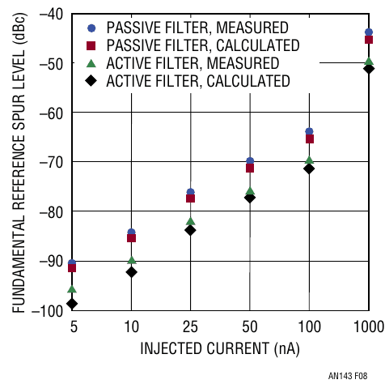

用实测检查 CP 漏电模型
AN143 Fig. 8 先抵消本底漏电杂散，再向泵节点注入已知直流电流。两套实验都用 250 kHz PFD。无源网络用 8.2 nF 和 18 MHz/V；有源网络用 22 nF 和 63 MHz/V，另有 100 Ω / 13.3 nF 后置极点。下面按 Table 1 参数复算基波。

ADI AN143 第 6 页 Fig. 8 · 漏电注流实测与计算ADI AN143 第 7 页 Table 2 · 无源情形取后级增益为 1
蓝：本页公式；橙点：从作者原图近似读取的实测（dBc）
橙点按约 1 dB 精度读图，并非作者发布的原始数表。切换电流，检查电流增加十倍时的 dBc 变化。Fig. 3 的 1 MHz PFD 频谱属于另一次测量。
ADI AN143 第 6 页 Table 1 · 实验参数